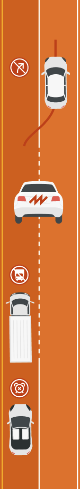

Type of Violation
WHY
Entering/exiting Express Lane outside authorized ingress/egress zones
Safety hazard that frequently causes accidents, as Express Lanes regularly have speed
differentials compared to general purpose lanes
Tampering of license plate
(tinted covers, photo block spray, or other concealment methods)
Obstructed license plates do more than just help people evade the authorities. For instance
a hit-and-run, road rage incident, or other type of dangerous and/or illegal interaction
Unauthorized vehicle on I-70 Mountain Express Lanes
(more than two axles, 25 ft. or longer, trailers)
The I-70 Mountain Express Lanes are 11 feet wide instead of the Federal Highway
Administration 12 feet mandate, thus it is not safe to be driven by oversized vehicles
Vehicle using the I-70 Mountain Express Lanes outside operating hours
When the I-70 Mountain Express Lanes are closed, they act as wide shoulders for emergency
stops
